항공무선통신사 (2013-10-12 기출문제)
1과목: 전파법규
1. 다음 중 변경허가를 받아야 하는 사항이 아닌 경우는?
- 간이무선국의 동일 주파수대역내에서의 주파수 변경
- 송신공중선의 형식, 구성 및 이득의 변경
- 공중선전력의 변경
- 운용허용시간의 변경
(정답률: 64%)

2. '항공무선통신사'자격증을 가진 사람이 운용할 수 있는 종사범위에 해당하는(포함되는) 자격종목은?
- 전파전자통신기능사
- 무선설비기능사
- 제3급아마추어무선기사(전화급)
- 제2급아마추어무선기사
(정답률: 93%)
3. 다음 중 미래창조과학부장관이 추진하여야 하는 전파이용기술의 표준화에 관한 사항이 아닌 것은?
- 전파관련 표준의 제정
- 전파관련 표준의 보급
- 전파관련 표준의 적합인증
- 전파관력 표준의 등록
(정답률: 63%)
4. 항공국의 개설허가 유효기간의 알맞은 것은?
- 1년
- 2년
- 3년
- 5년
(정답률: 69%)
5. 전파법에서 규정하는 '무선국'의 정의로 옳은 것은?
- 전파를 이용하여 부호를 보내거나 받는 통신시설
- 무선전신, 무선전화, 기타 전파를 보내거나 받는 전기적 시설
- 무선설비와 무선설비를 조작하는 자의 총체
- 전파를 이용하여 음성, 기타 음향을 보내거나 받는 통신시설
(정답률: 59%)
6. 다음 중 항공고정업무에 있어서 통신의 우선순위가 가장 빠른 것은?
- 항공기의 도착정보
- 항공기의 안전운항에 관한 통신
- 항공기 기상예보 및 기상통보
- 항공기 등의 조난 또는 인명안전에 관한 긴급한 통보
(정답률: 92%)
7. 다음 중 전파감시업무가 아닌 것은?
- 무선국에서 사용하고 있는 전파의 품질측정
- 혼신을 일으키는 전파의 탐지
- 무선국에서 발사한 전파의 도청
- 무허가 무선국에서 발사하는 전파의 탐지
(정답률: 80%)
8. 기지국과 육상이동국, 육상국과 이동국, 육상이동국 상호간 및 이동국 상호간의 통신을 중계하기 위하여 설치하는 무선국을 무엇이라 하는가?
- 이동국
- 이동중계국
- 기지국
- 육상국
(정답률: 90%)
9. 권한의 위임, 위탁 규정에 따라 무선국의 폐지 또는 운용휴지를 하고자하는 경우 누구에게 신고서를 제출하여야 하는가?
- 한국방송통신전파진흥원장
- 중앙전파관리소장
- 우정청장
- 국립전파연구원장
(정답률: 65%)
10. 기간통신사업자가 개설하는 무선국의 공중선주, 송신설비 및 수신설비는 공동사용명령의 대상이다. 이에 해당되지 않는 무선국은?
- 기지국
- 이동중계국
- 고정국
- 이동국
(정답률: 42%)
11. 다음 중 항공기국이 무선전화통신으로 무선방향탐지국에 대해여 방위측정용 부호를 송신하고자 하는 경우 송신순서로 옳은 것은?
- 자국의 호출부호 - 각 10초간의 2선 - 자국의 호출부호
- 상대국의 호출부호 - 각 10초간의 2선 – 자국의 호출부호
- 자국의 호출부호 - 각 20초간의 2선 상대국의 호출부호
- 상대국의 호출부호 - 각 20초간의 2선 – 자국이 호출부호
(정답률: 77%)
12. 다음 중 항공기국이 항공국과 무선전화에 의한 시험통신을 행할 때 가장 먼저 송신하는 것은?
- 상대국의 호출명칭
- 자국의 호출명칭
- 사용하고 있는 주파수
- 명료도
(정답률: 84%)
13. 국제전기통신연합의 회원국이 요구한 국제전기통신연합의 현장과 협약의 개정안을 신시하고 채택하는 기구는?
- 전권위원회
- 이사회
- 사무총국
- 세계전파통신회의
(정답률: 59%)
14. 다음 중 선박국과 협동 수색 및 구조작업에 종사하고 있는 항공기상의 무선국간에 통신에 사용할 수 있는 주파수는?
- 156.3[MHz]
- 4,125[kHz]
- 2,183.4[kHz]
- 500[kHz]
(정답률: 75%)
15. 다음 중 항공이동업무에 있어서 통신의 우선순위가 가장 우선인 것은?
- 무선방향탐지에 관한 통신
- 항공기의 안전운항에 관한 통신
- 기상통보에 관한 통신
- 항공기의 전상운항에 관한 통신
(정답률: 76%)
16. 무선국의 허가를 받은 자가 준공기한(기한을 연장한 경우에는 그 기한)이 지난 후 몇 일이 지날 때까지 준공신고를 마치지 아니한 경우에 무선국의 개설허가를 취소할 수 있는가?
- 20일
- 30일
- 40일
- 50일
(정답률: 87%)
17. 항공이동업무국의 121.5[MHz]의 주파수 사용조건으로 적정하지 못한 경우는?
- 항공기의 항공기국 상호간 통상적인 업무연락에 관한 통신을 행하는 경우
- 수색과 구조작업에 종사하는 항공기의 항공기국 상호간에 통신을 행하는 경우
- 121.5[MHz]외의 주파수를 사용할 수 없는 항공기국과 항공국 간에 통신을 행하는 경우
- 급박한 위험상태에 있는 항공기의 항공기국과 지상의 무선국 간에 통신을 행하는 경우로서 통상 사용하는 전파가 멸확하지 아니하거나 다른 항공기국 간에 사용하고 있는 경우
(정답률: 72%)
18. 다음 중 MF(핵터미터파) 전파의 주파수 범위로 옳은 것은?
- 300[kHz] 초과 3,000[kHz] 이하
- 3[MHz] 초과 30[MHz] 이하
- 30[MHz] 초과 300[MHz] 이하
- 300[MHz] 초과 3,000[MHz] 이하
(정답률: 84%)
19. 다음 중 항공기가 항공국으로부터 조난통신에 사용하는 전파를 지시받지 못하는 경우에 행할 수 있는 조난통신용 주파수로 적절하지 않은 것은?
- 156,8[MHz]
- 2,182[kHz]
- 500[kHz]
- 4,555[kHz]
(정답률: 61%)
20. 대한민국 헌법 또는 헌법에 의하여 설치한 국가기관을 폭력으로 파괴할 것을 주장하는 통신을 발한 자에 대한 벌칙은?(관련 규정 개정전 문제로 여기서는 기존 정답인 2번을 누르면 정답 처리됩니다. 자세한 내용은 해설을 참고하세요.)
- 3년 이하의 징역 또는 1,000만원 이하의 벌금
- 3년 이상의 유기징역 또는 금고
- 5년 이하의 징역 또는 5,000만원 이하의 벌금
- 5년 이상의 유기징역 또는 금고
(정답률: 48%)
2과목: 기초전파공학
21. 신호의 수신과정에서 피변조파에 포함된 신호파를 가청주파수로 변환하는 과정을 무엇이라 하는가?
- 변조
- 복조
- 발진
- 증폭
(정답률: 31%)
22. 다음 중 위성항법시스템(GNSS)의 보점시스템과 관계가 없는 것은?
- ABAS(Airborne Based Augmentation System)
- SBAS(Satellite Based Augmentation System)
- IOSS ( Ingrated Operation and Surveillance System)
- GBAS (Ground Based Augmentation System)
(정답률: 47%)
23. ADF의 방향탐지용으로서 야간오차를 경감하는데 사용되는 안테나는 무엇이라 하는가?
- 루프(Loop) 안테나
- 슬리브(Sleeve) 안테나
- 에트콕(Adcock) 안테나
- 웨이브(Wave) 안테나
(정답률: 11%)
24. 다음 중 전리층에 대한 설명으로 틀린 것은?
- 전리층 중에 D층과 E층은 주로 낮에만 존재한다.
- 전리층 중에서 F층이 전파전달에 가장 큰 영향을 준다.
- 전리층 내부에서 특정 주파수의 전파는 회절된다.
- 전리층에 의해 가장 심하게 영향을 받는 주파수는 3~30[MHz]이다.
(정답률: 55%)
25. 수정 발진기의 주파수 안정도가 높은 이유를 잘못 설명한 것은?
- 수정면의 Q가 매우 높다.
- 부하 변동이 영향을 전혀 받지 않는다.
- 발진 조건을 만족시키는 유도성 주파수의 범위가 매우 좁다.
- 기계적으로나 물리적으로나 안정하다.
(정답률: 54%)
26. 전원공급설비의 계통을 바르게 나타낸 것은?
- 여과기 → 정류기 → 전압안정기 → 부하
- 정류기 → 전압안정기 → 여과기 → 부하
- 정류기 → 여과기 → 전압안정기 → 부하
- 전압안정기 → 여과기 → 정류기 → 부하
(정답률: 50%)
27. 전형적인 전방향표지시설(VOR) 수신기의 지시부(Indicator)에서 선택한 레디알(Radial)의 편향정도를 나타내는 부분은?
- Omni Bearing Selector
- Course Selector Knob
- To/From Indicator
- Course Deviation Indicator
(정답률: 48%)
28. 다음 중 항공교통관제(ATC) 서비스 기능이 아닌 것은?
- 지역 관제
- 비행 정보 제공
- 접근 관제
- 비행장 관제
(정답률: 55%)
29. 121[MHz] 송신기의 주파수를 주파수측정기로 측정하엿더니 주파수 편차가 -1,280[Hz]였다면 송신기에서 발사되는 실제 주파수는 얼마인가?
- 121,001,280 [Hz]
- 121,128,000 [Hz]
- 121,000,000 [Hz]
- 120,998,720 [Hz]
(정답률: 68%)
30. SSR 시스템에서 무지향성 안테나가 추가 사용되는 이유는?
- 지향성 안테나의 고장에 대비하기 위하여
- 레이더 주변의 모든 항공기에 대한 추적을 동시에 수행하기 위하여
- 레이더 주변의 모든 항공기로부터의 신호를 모두 수신하기 위하여
- 지향성 안테나의 중심선 주변에서 생성되는 부엽(Side Lobe)을 억제하기 위하여
(정답률: 46%)
31. 하나의 안테나에 여러 개의 주파수의 전파를 이용하려고 할 때에 사용되는 코일을 무엇이라고 하는가?
- 단축 코일
- 연장 코일
- 트랩(Trap)
- 유도 코일
(정답률: 44%)
32. 우주무선통신에 많이 사용하는 통신 방식은?
- FDM (Frequency Division Multiplexing)
- TDM (TIme Division Multiplexing)
- CDM (Code Division Multiplexing)
- QAM (Quadrature Division Multiplexing)
(정답률: 36%)
33. 전송선을 통해 신호를 안테나로 급전할 때 안테나의 임피던스 Zc=300[Ω]이고 급전선로의 특성 임피던스 Zo=200[Ω]이라고 하면 부정합에 의하여 전송선에 정재파가 발생되는데 이 때의 전압 정재파비(VSWR)는?
- 1/5
- 5
- 2/3
- 3/2
(정답률: 50%)
34. 대류권을 따라 전파되는 전파로서 주로 대류권 대기의 영향을 받는 전파를 무엇이라 하는가?
- 대류권파
- 대류권 산란파
- 대지반사파
- 지표파
(정답률: 63%)
35. 다음 중 전방향표지시설(VOR)의 식별부호로서 올바른 것은?
- 1~2개의 문자로 된 국제 모르스부호를 사용한다
- 2~3개의 문자로 된 국제 모르스부호를 사용한다
- 3~4개의 문자로 된 국제 모르스부호를 사용한다
- 4~5개의 문자로 된 국제 모르스부호를 사용한다
(정답률: 58%)
36. 다음 중 도체의 저항에 대한 설명으로 옳지 않은 것은?
- 도선의 도체저항이 클수록 전류는 적게 흐른다.
- 도체의 길이가 길수록 저항이 많다.
- 도체의 단면적에 비례한다.
- 1[Ω]은 1[V]의 전위차에 대하여 1[A]의 전류를 흐르게 하는 값이다.
(정답률: 62%)
37. “전기회로의 한 점에 흘러들어오는 전류의 총합은 흘러나가는 전류의 총합과 같다”라는 법칙은 무엇인가?
- 키르히호프의 법칙
- 옴의 법칙
- 주울의 법칙
- 패러데이의 법칙
(정답률: 54%)
38. 다음 중 RAM에 관한 설명이 잘못된 것은?
- 기억된 내용를 읽기만 하고 기억할 수 없다.
- 일반 프로그랩에서 필요한 데이터를 저장 시킬 수 있다.
- 일반적인 프로그램이나 데이터를 기억 시킬 수 있다.
- 임의로 데이터를 기억시키고, 기억된 내용을 읽을 수 있다.
(정답률: 56%)
39. 다음 중 항공기의 계기착륙장치(ILS)와 관계가 없는 것은?
- 로컬라이저
- 글라이드패스
- 마이커비콘
- 레이더
(정답률: 65%)
40. 출력이 각각 100[W]인 VHF 송신기 2대가 안테나를 하나로 사용하기 위해 결합기(Combiner)와 연결되어 있다. 사용한 결합기의 손실이 2[dB]이고, 케이블 손실이 8[dB]라면 안테나의 인입되는 송신기 1대의 출력은 얼마인가?
- 10[W]
- 20[W]
- 50[W]
- 100[W]
(정답률: 38%)
3과목: 통신보안
41. 통신보안자재에 대한 보안유지 방법으로 잘못된 것은?
- 자재 취급자를 제한한다.
- 일반인의 출입을 금지한다.
- 충분한 교육과 관리를 철저히 한다.
- 보안자재를 휴대가 용이한 보관함에 보관한다.
(정답률: 61%)
42. 비밀누설의 주요원인이 아닌 것은?
- 불요불급한 통화의 억제
- 비밀내용을 평문으로 송신
- 과도한 통신의 소통
- 취약성 있는 통신망 이용
(정답률: 59%)
43. 다음 중 통신보안도가 상대적으로 가장 높은 것은?
- 전령통신(인편)
- 유선통신
- 무선통신
- 등기우편
(정답률: 62%)
44. 다음중 통신보안 대책에 해당되지 않는 것은?
- 비밀내용 송신 시 암호를 사용한다.
- 통신내용의 비밀 유무를 사전 검토한다.
- 비밀내용의 약어 사용을 준수한다.
- 통신 규율을 잘 지키도록 한다.
(정답률: 60%)
45. 다음 중 보안자재의 관리요령으로 틀린 것은?
- 과거용, 현재용, 미래용을 분리 보관한다.
- 과거용과 미래용은 혼합보관하고 현재용만 분리 보관한다.
- 보안자재는 매주 1회 점검한다.
- 보안자재는 일반문서와 분리 보관한다.
(정답률: 64%)
46. 다음 중 무선통신의 통신보안 취약점으로 가장 옳은 것은?
- 즉흥적인 문답식 대화로 보안자재 사용 기피
- 실선에 의한 통화이므로 보안의식 없이 주요내용 통화
- 교환업무 종사자에 대한 의도적 도청 가능
- 출력에 따라 원거리까지 전파되므로 어느 곳에서나 도청 가능
(정답률: 58%)
47. 다음 중 통신보안상 가장 안전한 통신방법은?
- 무선전화
- 팩시밀리
- 인쇄전신
- 보안장비가 설치된 무선전화
(정답률: 68%)
48. '기만통신'과 거리가 먼 것은?
- 통신회선 중간에 개입하여 내용을 누설토록 유도하는 행위
- 통신만에 개입, 허위정보를 제공하여 업무수행에 혼란을 일으키는 행위
- 상대방의 통신회선을 교란시켜 통신소통을 방해하는 행위
- 통신망에 개입, 다른 정보를 전달하여 적을 기만하는 행위
(정답률: 53%)
49. 다음 통신정보 수집방법 중 직접적인 방법에 속하는 것은?
- 통신보안장비 및 통신제원 입수
- 무선통신망 도청
- 대상 통신소에 첩자 침투
- 대상 통신소 관련요원 매수
(정답률: 48%)
50. 다음 중 새로운 산업비밀의 탐지유형을 설명한 것으로 틀린 것은?
- 국제 품질인증, 경영자문 컨설팅 활용
- 전,현직 고위공직자 초청 강연 및 퇴직자 활용
- 정보브로커 이용
- 공개채용으로 인사관리
(정답률: 58%)
4과목: 영어
51. 다음 문장의 밑줄친 곳에 들어갈 가장 적당한 단어는?
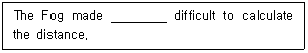
- on
- of
- it
- such
(정답률: 68%)
52. 다음 문장에서 밑줄 친 부분의 표현이 잘못된 것은?
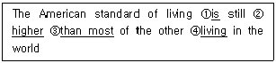
- ①
- ②
- ③
- ④
(정답률: 76%)
53. The correct words of "MH 100" are :
- heading one zero zero degrees
- heading one zero zero
- magnetic heading one hundred
- magnetic heading one zero zero
(정답률: 55%)
54. 특정 지시나 허가, 요청을 따를 수 없을 때 사용하는 항공관제 용어는?
- WHEN ABLE
- UNABLE
- NEGATIVE
- NEGATIVE CONTACT
(정답률: 82%)
55. 다음 문장의 괄호 안에 들어갈 적절한 것은?
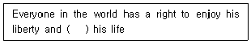
- still more
- much more
- much less
- more less
(정답률: 74%)
56. 다음은 어떤 용어에 대한 설명인가?
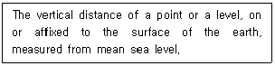
- Elevation
- Altitude
- Height
- Flight Level
(정답률: 47%)
57. 다음 문장의 괄호 안에 들어갈 적절한 내용은?
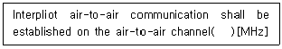
- 121.50
- 123.45
- 126.20
- 243.00
(정답률: 50%)
58. 다음 문장의 밑줄친 부분에 들어갈 가장 적절한 단어는?
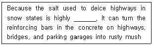
- obvious
- diluted
- corrosive
- profitable
(정답률: 60%)
59. 다음 문장의 밑줄 친 부분의 뜻은?
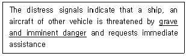
- 큰 위험이나 별로 급하지 않은 위험
- 중대하고도 시급한 위험
- 시급하고 조심스러운 위험
- 시급하나 별로 중요치 않은 위험
(정답률: 79%)
60. 다음 문장에 해당하는 통신 용어는?
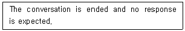
- OVER
- OUT
- DISREGARD
- HAND OFF
(정답률: 30%)
61. 다음 문장의 괄호 안에 알맞은 것으?
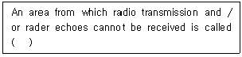
- blind zone
- black zone
- shaded zone
- uncontrolled zone
(정답률: 70%)
62. 항공통신의 송신내용중에 “I READ BACK"이란 용어의 뜻은?
- Wait and I will call you
- Annual the previously transmitted clearance
- Permission for proposed action granted
- Repeat my message back to me
(정답률: 77%)
63. 약어 “CAVOK”의 의미와 발음을 가장 적절하게 설명한 것은?
- No precipitation, KA-VOK
- No precipitation, KAV-OH-KAV
- Visibility, cloud and present weather better than prescribed values, KA-VOK
- Visibility, cloud and present weather better than prescribed values, KA-OH-KAY
(정답률: 69%)
64. 항공통신용어 중 'Unable to contact'란 말의 뜻은?
- 어떤 통신국과 교신할수 없다.
- 어떤 통신국과 교신하면 안된다.
- Negative contact와 같은 의미이다.
- Positive contact와 같은 의미이다.
(정답률: 75%)
65. 다음의 주어진 문장과 뜻이 가장 가까운 것은?
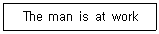
- The man is working harder than usual
- The man is going to work
- The man has done his work
- The man is working
(정답률: 76%)
66. 관제사가 항공교통 관제상 위험한 상황을 피하기 위해 조종사에게 급한 항공기 기동을 요구할 때 주로 쓰이는 말은?
- Atonce
- Very soon
- Right now
- immediately
(정답률: 82%)
67. 다음은 어떤 항공 용어에 대한 설명인가?
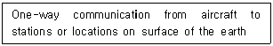
- Broadcast
- Non-Network communication
- Air-Ground communication
- Air-to-Ground communication
(정답률: 68%)
68. 다음 문장의 밑줄 친 부분에 알맞은 단어는?
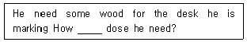
- much
- great
- long
- many
(정답률: 71%)
69. 조난신호에 관한 ICAO 규정으로 괄호 안에 적절한 것은?
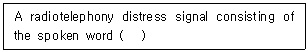
- MAYDAY
- HELP
- URGENT
- PAN PAN
(정답률: 71%)
70. 다음 문장에서 설명하는 주파수 단위는?
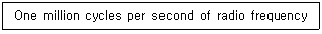
- Hertz
- Kilohertz
- Megahertz
- Gigahertz
(정답률: 69%)